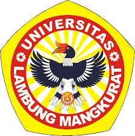
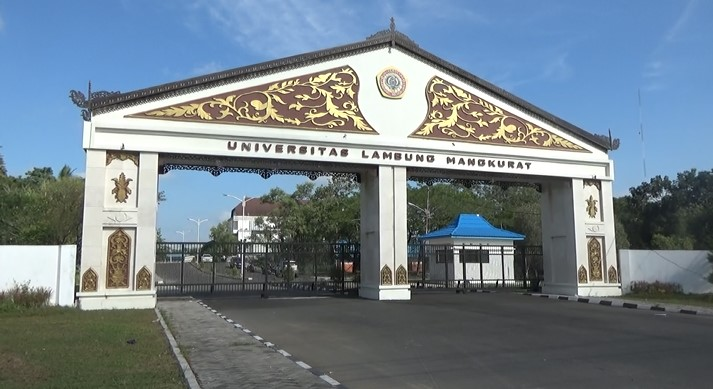
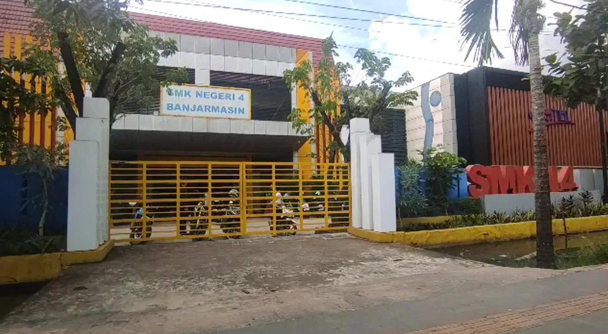
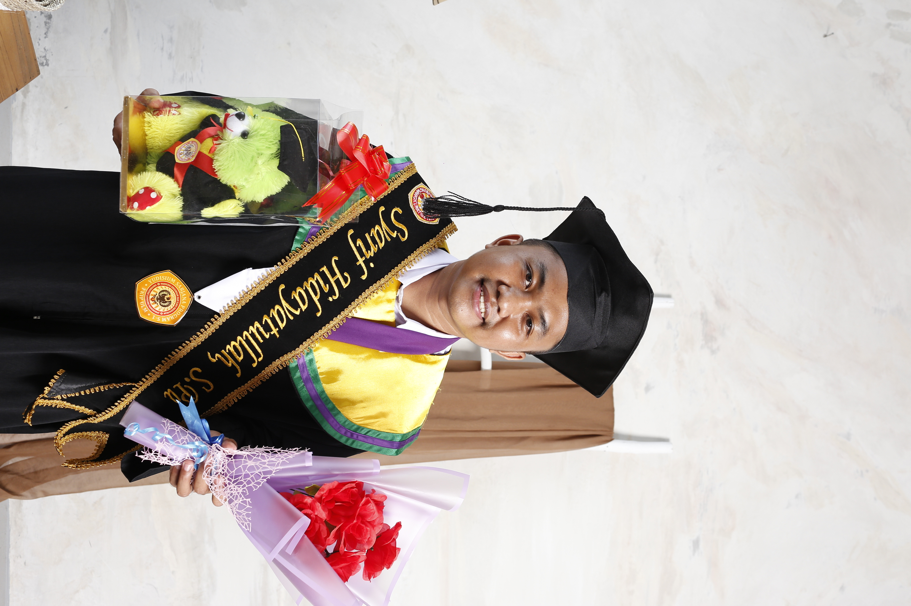
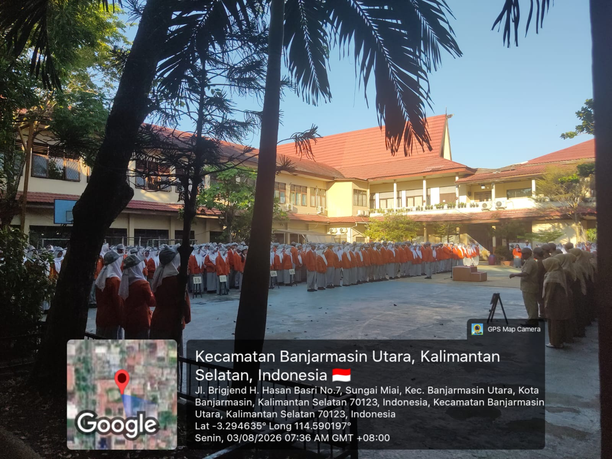
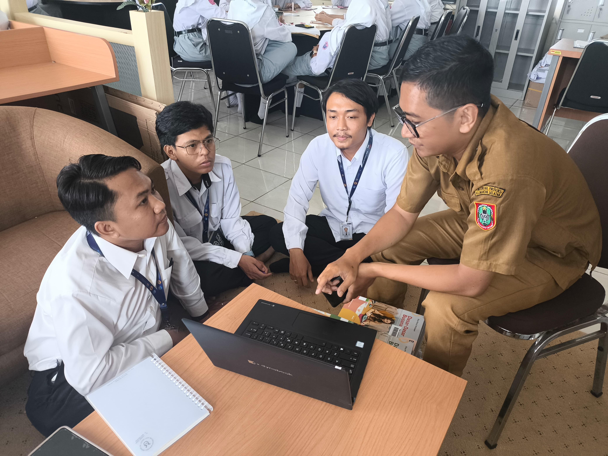
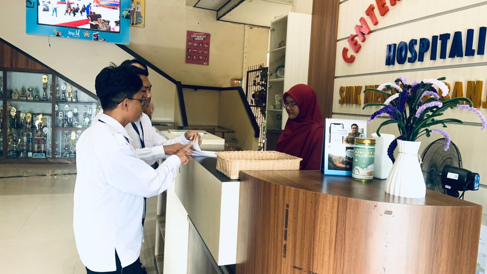
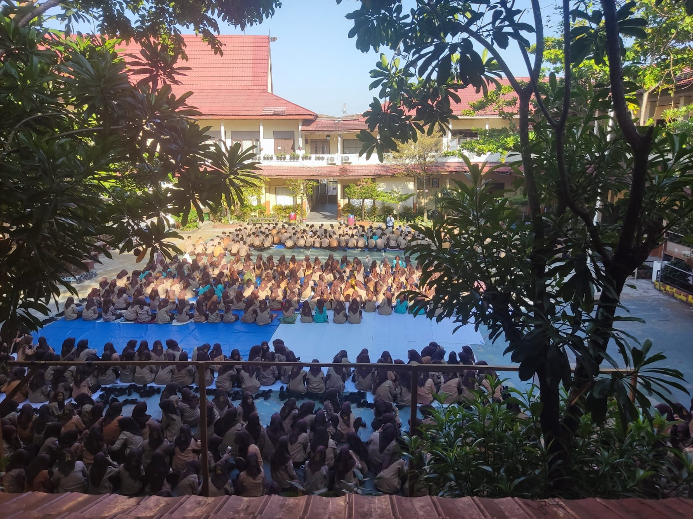
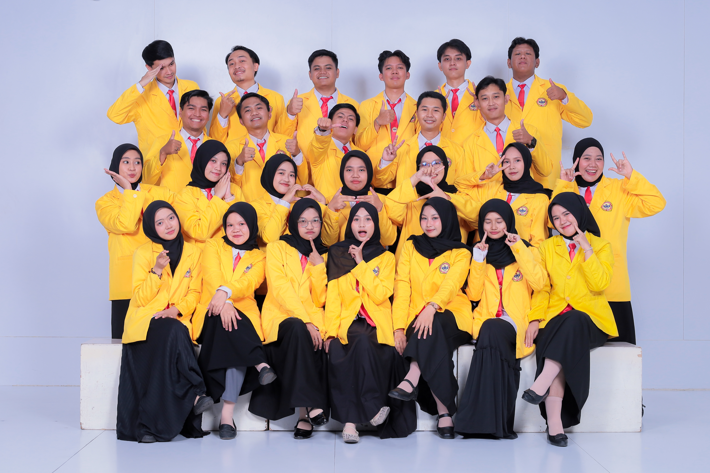

E-Portfolio LK 3 Praktik Mengajar PPL

Universitas Lambung Mangkurat, LPTK unggul dalam mencetak guru profesional berbasis IPTEKS dan kearifan lokal lahan basah. Akreditasi Unggul.


Sekolah mitra pelaksanaan PPL. SMK Negeri 4 Banjarmasin dikenal sebagai pusat keunggulan bidang teknologi dan kejuruan.


Telusuri profil, analisis produk, dan refleksi diri praktik mengajar.
Identitas diri, latar belakang, dan visi saya sebagai calon guru profesional.
SelengkapnyaAnalisis Materi, Media, Video, Kegiatan Non-Mengajar, dan Instrumen Penilaian.
SelengkapnyaRefleksi mendalam mengenai tantangan, solusi, dan komitmen sebagai guru profesional.
Selengkapnya
Syarif Hidayatullah, lahir dan besar di Abung Wirajaya, Kecamatan Limpasu, Kabupaten Hulu Sungai Tengah, Kalimantan Selatan — sebuah daerah yang menyimpan pesona alam perbukitan yang menghijau, udara pegunungan yang segar, dan hamparan sawah yang membentang luas. Masyarakat di sana dikenal dengan kearifan lokal yang kuat, hidup dalam ikatan kekeluargaan yang erat, serta menjunjung tinggi nilai-nilai religius dan semangat gotong royong yang diwariskan secara turun-temurun.
Sejak kecil, saya dibesarkan dalam lingkungan yang sederhana namun kaya akan nilai-nilai kehidupan, di mana setiap warga saling membantu dan menghargai satu sama lain dalam suka maupun duka. Latar belakang inilah yang membentuk karakter saya sebagai pribadi yang adaptif, reflektif, dan peduli terhadap sesama — nilai-nilai yang saya bawa dalam perjalanan menjadi calon guru Informatika.
Apam Barabai, Lamang, Kue Lam
Batumbang Apam, Aruh Adat, Tari Surung Apam, Musik Panting
Tugu Burung Anggang, Riam Bajandik & Pulau Mas, Manggasang
Huma Betang, Semangat Gotong Royong, Mufakat & Religius
"Menjadi pendidik Informatika yang profesional, adaptif, dan inspiratif — mampu membimbing peserta didik menguasai teknologi digital secara bijak, berkarakter, dan berdaya saing, serta berkontribusi nyata dalam mewujudkan pendidikan Indonesia yang merata, bermakna, dan berlandaskan nilai-nilai Pancasila."
Merancang pembelajaran Informatika yang kontekstual, berpusat pada murid, dan mengintegrasikan teknologi dengan kebutuhan nyata peserta didik.
Menerapkan pembelajaran berdiferensiasi berbasis pemetaan ZPD dan scaffolding bertahap agar setiap murid berkembang sesuai kemampuannya.
Menanamkan nilai kejujuran, tanggung jawab, gotong royong, dan keadilan sosial dalam setiap kegiatan pembelajaran.
Membangun kelas yang mendorong pola pikir bertumbuh, menormalisasi kesalahan sebagai bagian dari belajar, dan menguatkan 'The Power of Yet'.
Membangun komunikasi aktif dengan keluarga dan masyarakat sebagai bagian dari ekosistem pendidikan yang mendukung tumbuh kembang murid.
Terus belajar, berefleksi, dan beradaptasi melalui inkuiri kolaboratif bersama rekan sejawat, guru pamong, dan dosen pembimbing.
"Pendidikan adalah daya upaya untuk memajukan bertumbuhnya budi pekerti, pikiran, dan tubuh anak."
— Ki Hadjar Dewantara
Analisis mendalam mengenai materi, media, video, kegiatan non-mengajar, dan instrumen penilaian.
Deskripsi Produk: Rangkaian Modul Ajar ini disusun untuk tiga pertemuan dengan menggunakan pendekatan Deep Learning (Berkesadaran, Bermakna, dan Menggembirakan). Model pembelajarannya bervariasi, mulai dari Discovery Learning pada Pertemuan 1 (Data & Informasi) dan Pertemuan 2 (Struktur Data & Array), hingga Problem Based Learning (PBL) pada Pertemuan 3 (Stack & Queue).
Analisis: Saat menyusun modul ini, saya menyadari bahwa murid Kelas X RPL memiliki latar belakang yang sangat heterogen. Oleh karena itu, saya mengintegrasikan prinsip Teaching at the Right Level (TaRL) yang terlihat jelas pada pembagian kelompok di LKM. Di Pertemuan 3, saya sengaja mengangkat studi kasus Pasar Terapung Lok Baintan sebagai contoh antrean (Queue). Ini adalah bentuk penerapan Culturally Responsive Teaching (CRT) agar murid merasa bahwa materi struktur data itu dekat dengan kehidupan dan budaya mereka di Kalimantan Selatan, bukan sekadar teori abstrak di layar komputer. Saya juga menekankan penguatan konsep indeks array (yang berdasarkan asesmen hanya 19% dipahami) sebelum masuk ke materi Stack & Queue.
Deskripsi Produk: LKM dirancang bukan sekadar lembar soal, melainkan panduan aktivitas belajar. LKM 1 berfokus pada pengelompokan bentuk data (teks, angka, gambar, audio, video) dan membedakan data/informasi. LKM 2 menuntut murid menyusun array dari studi kasus sehari-hari dan menuangkannya dalam bentuk visual (menggunakan Canva). LKM 3 menguji pemahaman murid terhadap LIFO (Stack) dan FIFO (Queue) melalui analisis kasus nyata (seperti fitur Undo dan antrean kantin).
Analisis: Dari sisi pedagogis, LKM ini sangat suportif untuk mendorong kolaborasi. Pada LKM 2, saya meminta murid menggunakan Canva untuk membuat representasi visual array. Tujuannya agar murid tidak bosan menulis di buku, sekaligus mengasah kreativitas digital mereka. Untuk mengakomodasi kelompok yang lambat (Kelompok C), LKM ini dilengkapi dengan instruksi bertahap dan contoh yang memudahkan mereka untuk mulai berpikir komputasional.
Deskripsi Produk: Media pembelajaran yang saya gunakan berfokus pada pemanfaatan platform digital interaktif, yaitu Google Classroom (sebagai LMS utama), Canva (untuk visualisasi Array), Quizizz/Wayground (asesmen formatif), dan Wordwall (permainan drag & drop).
Analisis: Mengingat materi ini bersifat fondasi (berpikir komputasional) dan belum masuk ke tahap coding (sehingga software seperti Visual Studio Code belum digunakan), saya memilih media yang bisa memvisualisasikan konsep abstrak menjadi konkret. Penggunaan Wordwall untuk aktivitas mengklasifikasikan data/informasi terbukti sangat efektif. Murid yang biasanya pasif menjadi berebut maju ke depan layar untuk melakukan drag & drop. Hal ini membuktikan bahwa gamifikasi sederhana mampu membangun suasana belajar yang "menggembirakan" (sesuai pendekatan Deep Learning). Google Classroom juga krusial untuk memastikan pengumpulan tugas (seperti hasil desain Canva di LKM 2) lebih terorganisir dan tidak ada tugas yang tercecer.
LMS – Distribusi materi & pengumpulan tugas
Visualisasi Array & Mind Map
Kuis interaktif – asesmen formatif
Siswa maju ke depan untuk mengklasifikasikan mana yang termasuk data dan mana yang termasuk informasi.
Deskripsi Produk: Rekaman video kegiatan belajar mengajar (KBM) di Lab Komputer SMKN 4 Banjarmasin.
Analisis (Refleksi Diri): Dari hasil menonton video rekaman diri sendiri, saya menyadari beberapa hal. Kelebihan: Saya mampu membangun komunikasi dua arah yang hangat, dan pengelolaan kelas saat murid mencoba simulasi berjalan kondusif. Kekurangan: Saya masih terlalu cepat dalam memberikan instruksi teknis di awal pembelajaran. Ke depannya, saya harus lebih banyak memberikan jeda dan memastikan seluruh murid memahami instruksi sebelum mereka mulai mencoba simulasi.
Deskripsi Produk: Kegiatan di luar jam mengajar yang saya ikuti meliputi Konsultasi dengan Guru Pamong, Upacara Bendera, Jaga Piket Sekolah, kegiatan Literasi Pagi di hari Jumat, dan penggunaan seragam Pramuka.
Analisis: Melalui kegiatan non-mengajar ini, saya menyadari bahwa ekosistem sekolah (mikrosistem dan eksosistem) sangat mempengaruhi kenyamanan belajar murid. Konsultasi dengan guru pamong menjadi wadah refleksi saya dalam memperbaiki cara mengajar dan menangani murid bermasalah. Kegiatan Jaga Piket dan Upacara Bendera mengajarkan saya tentang manajemen waktu, kedisiplinan, dan rasa tanggung jawab terhadap lingkungan sekolah. Sementara itu, kegiatan Literasi Pagi Jumat dan penggunaan Baju Pramuka menanamkan nilai-nilai karakter, kebersamaan, serta kedisiplinan yang positif bagi saya dan para murid. Pengalaman ini menegaskan bahwa menjadi guru profesional bukan hanya soal mengajar di kelas, tetapi juga berkontribusi pada tata kelola sekolah secara keseluruhan.




Deskripsi Produk: Lembar penilaian perangkat pembelajaran (Modul Ajar, LKM, Media) yang dinilai oleh Guru Pamong pada setiap pertemuan.
Deskripsi Produk: Lembar penilaian praktik mengajar di kelas (keterampilan mengajar, pengelolaan kelas) yang dinilai oleh Guru Pamong.
Deskripsi dan Keterkaitan: Instrumen penilaian yang dirancang (berupa lembar observasi, rubrik presentasi, dan penilaian LKM) bertujuan untuk mengukur ketercapaian tujuan pembelajaran secara autentik. Melalui lembar penilaian dari Guru Pamong, saya menyadari bahwa asesmen tidak hanya berfokus pada hasil akhir (kognitif), tetapi juga pada proses (psikomotorik dan afektif) saat murid berdiskusi dan mengerjakan proyek.
Analisis dan Refleksi: Umpan balik dari instrumen ini menjadi dasar refleksi saya untuk memperbaiki pengelolaan kelas dan penyampaian materi di pertemuan berikutnya. Misalnya, pada penilaian praktik mengajar di Pertemuan 1, saya mendapat catatan bahwa pengelolaan waktu masih kurang efisien. Dari catatan tersebut, saya melakukan perbaikan pada Pertemuan 2 dan 3, yang kemudian terbukti meningkatkan keterlibatan aktif murid. Secara keseluruhan, instrumen ini memastikan bahwa setiap murid benar-benar memahami konsep Data & Informasi hingga Stack & Queue secara bermakna, bukan sekadar menghafal teori.
Menjalani PPL Terbimbing di SMKN 4 Banjarmasin memberikan pengalaman yang sangat berharga. Tantangan terbesar saya adalah mengelola kelas yang heterogen, di mana sebagian murid sudah mahir menggunakan komputer, sementara 14% lainnya masih memerlukan pendampingan intensif karena belum pernah memegang komputer.
Saya menyadari bahwa menjadi guru bukanlah sekadar mentransfer ilmu, tetapi menjadi fasilitator yang mampu memahami kebutuhan setiap murid. Penerapan Teaching at the Right Level (TaRL) dan pembuatan media inovatif terbukti mampu menjembatani kesenjangan tersebut. Melihat murid-murid antusias mencoba simulasi dan berhasil memahami materi adalah kepuasan tersendiri bagi saya.
Ke depannya, saya ingin terus mengasah kemampuan saya dalam merancang pembelajaran yang berdiferensiasi dan lebih adaptif terhadap perkembangan teknologi. Saya juga berkomitmen untuk selalu melakukan refleksi berkelanjutan setelah setiap sesi pembelajaran agar dapat terus memperbaiki kualitas diri saya sebagai calon guru profesional.
